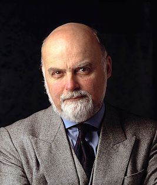
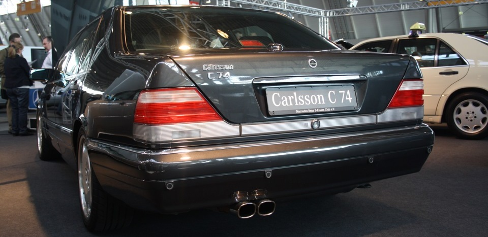

Розробка
Розробка нової серії флагманських моделей німецької марки Mercedes-Benz почалася в 1981 році. Запуск виробництва був спочатку запланований на жовтень 1989 року. Головним дизайнером виступав Бруно Сакко.  Між 1982 і 1986 роками було розроблено кілька конструкторських проектів. Остаточний варіант від Олівера Буле був затверджений 9 грудня 1986. Кілька прототипів були протестовані в початку 1987 року, а остаточний зовнішній дизайн був заморожений в 1987 році. Заява на отримання патентів були подані 23 лютого 1988 року в Німеччині і 23 серпня того ж року в США [4]. Перед початком виробництва зовнішній вигляд W140 був переглянутий, що відбилося на решітці радіатора, яку зробили «втопленою» для всіх моделей на відміну від планової ексклюзивної решітки для топової версії - особливість, яка згодом поширилася на решту продукції Mercedes-Benz. У 1987 році в роботі над проектом була проведена затримка в 18 місяців, під час якої інженери німецького концерну працювали над способами розміщення двигуна V12 [3] і застосування високоефективної гальмівної системи. Це призвело до завершення остаточних дослідно-конструкторських розробок в червні 1990 року. Експериментальні виробничі моделі були випущені з червня 1990 року до січня 1991 року. В цей же час (1989 рік) компанія Lexus представила власний розкішний седан LS 400. У відповідь на якість і характеристики конкурентного автомобіля, концерн Daimler-Benz був змушений зробити подальші покращення якраз перед початком виробництва в 1991 році, щоб зміцнити ринкову позицію W140, що призвело до перевитрат бюджету і коштувало кар'єри головного інженера Вольфгангу Пітеру.
 У відповідь на якість і характеристики конкурентного автомобіля, концерн Daimler-Benz був змушений зробити подальші покращення якраз перед початком виробництва в 1991 році, щоб зміцнити ринкову позицію W140, що призвело до перевитрат бюджету і коштувало кар'єри головного інженера Вольфгангу Пітеру.
У відповідь на якість і характеристики конкурентного автомобіля, концерн Daimler-Benz був змушений зробити подальші покращення якраз перед початком виробництва в 1991 році, щоб зміцнити ринкову позицію W140, що призвело до перевитрат бюджету і коштувало кар'єри головного інженера Вольфгангу Пітеру. Нагороди
За свою багату кар'єру Бруно Сакко став володарем великого числа різних нагород і почестей. Його робота і внесок в дизайн автомобілів були визнані автомобільним журналом «Designer's Designer» (1996). Крім того, він був удостоєний премій «EyesOn Design Lifetime Achievement Award» (1997) і «Raymond Loewy Foundation's Lucky Strike Designer Award» (1997) . Сакко став одним з 25 осіб, включених до списку «Дизайнерів автомобілів століття» в 1999 році, і був внесений до Автомобільного залу слави в 2006 році і Європейського залу автомобільної слави в 2007 році. На батьківщині Сакко був удостоєний ордена «За заслуги перед Італійською Республікою» в 1991 році, і отримав почесний докторський ступінь від Університету Удіне в 2002 році.
